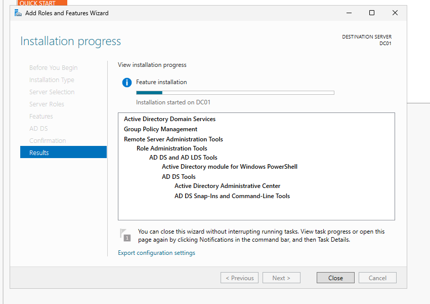
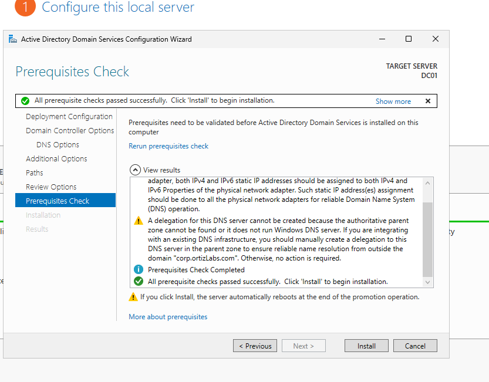
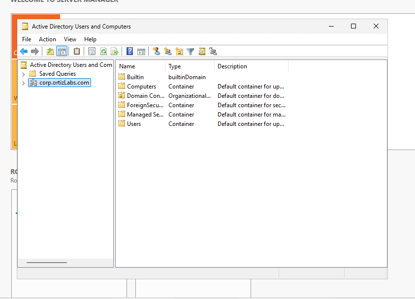

Erick Ortiz
Army National Guard 25U | Computer Information Systems Student | CompTIA Network+
Computer Information Systems student and CompTIA Network+ certified IT professional building hands-on experience in technical support, networking, Windows Server, Active Directory, PowerShell, and cybersecurity.
Building practical IT experience.
My background combines military communications, technical troubleshooting, customer support, and hands-on IT training.
Technical Focus
I am currently developing skills in help desk support, networking, Active Directory, Windows Server, PowerShell, Azure cloud concepts and cybersecurity.
Career Goal
My goal is to build a strong technical foundation and transition into professional IT roles involving infrastructure, systems administration, networking, and cybersecurity.
Hands-on IT Labs
Practical projects demonstrating my technical development and understanding of enterprise IT environments.
Active Directory Enterprise Lab
Designed and deployed a virtualized Windows domain environment to simulate an enterprise IT infrastructure.
View Project →Active Directory Enterprise Lab
A hands-on Windows Server lab designed to simulate Active Directory administration in a small enterprise environment.
Project Overview
I built a virtualized Windows domain environment to gain hands-on experience with Windows Server and Active Directory administration.
I configured a Windows Server domain controller named DC01, installed Active Directory Domain Services, and created the corp.ortizLabs.com domain.
I then created an organizational structure designed to simulate how users, departments, servers, and groups would be organized in a business environment.
Installing Active Directory Domain Services
I installed the Active Directory Domain Services role on DC01. The installation also included Group Policy Management, Remote Server Administration Tools, and the Active Directory PowerShell module.

Configuring the Domain Controller
After installing Active Directory Domain Services, I configured DC01 as a domain controller. Windows Server performed its prerequisite checks before completing the domain controller installation.

Creating the Active Directory Domain
After configuring the domain controller, I verified the new domain through Active Directory Users and Computers. The lab uses the corp.ortizLabs.com domain.

Creating Organizational Units
I created organizational units to represent a realistic company structure. Employee departments included IT, HR, Accounting, Sales, and Management, with additional organizational units for servers and groups.

Skills Demonstrated
- Windows Server role installation and configuration
- Active Directory Domain Services deployment
- Domain controller configuration
- Active Directory Users and Computers administration
- Organizational Unit design
- Windows domain administration fundamentals
Technologies & Tools
Technical Experience
Signal Operations Support Specialist
Arkansas Army National Guard
- Install, maintain, configure, and troubleshoot military communication systems (SINCGARS Radios, JBCP/MMCS Systems).
- Diagnose and resolve hardware and electronic device issues.
- Configure SATCOM, LOS, and SINCGARS communication equipment.
- Troubleshoot hardware, software, network connectivity, and system access issues.
- Follow technical procedures and documentation standards in mission-critical environments.
Professional Development
CompTIA Network+
Networking infrastructure, troubleshooting, and network operations.
Earned August 2026Microsoft Certified: Azure Fundamentals (AZ-900)
Demonstrates my foundational knowledge of cloud concepts, core Microsoft Azure services, and cloud security, governance, and pricing models.
Earned September 2026Academic Background
Computer Information Systems
Arkansas State University-Beebe
Associate of Science
Expected May 2027
Coursework and labs focus on computer hardware, software, networking, information systems, programming, and technical problem-solving.